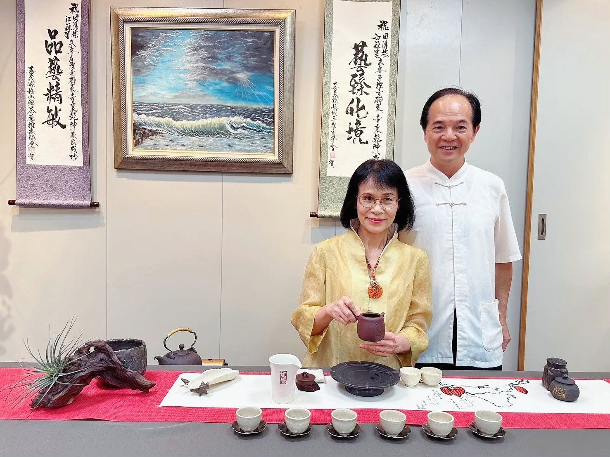
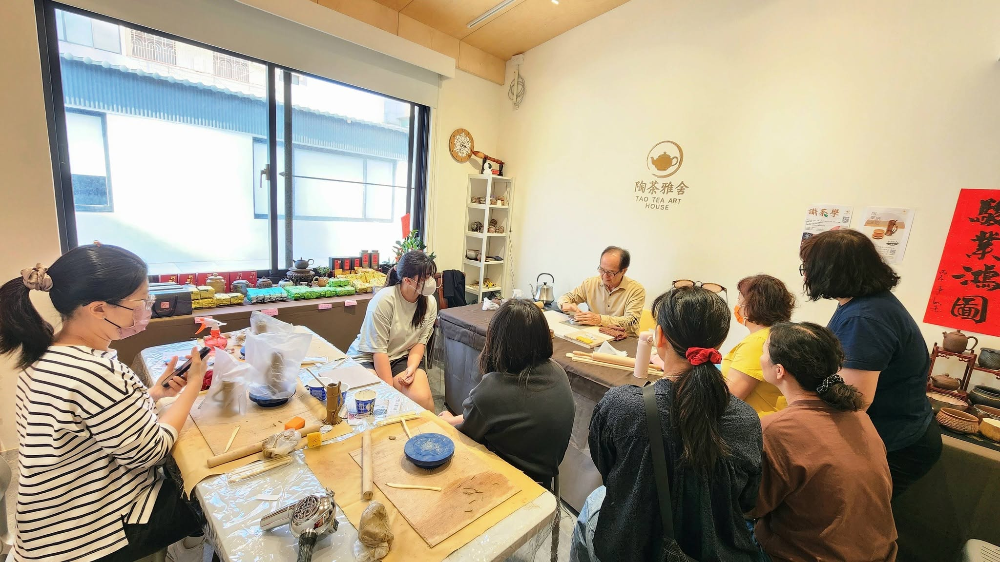
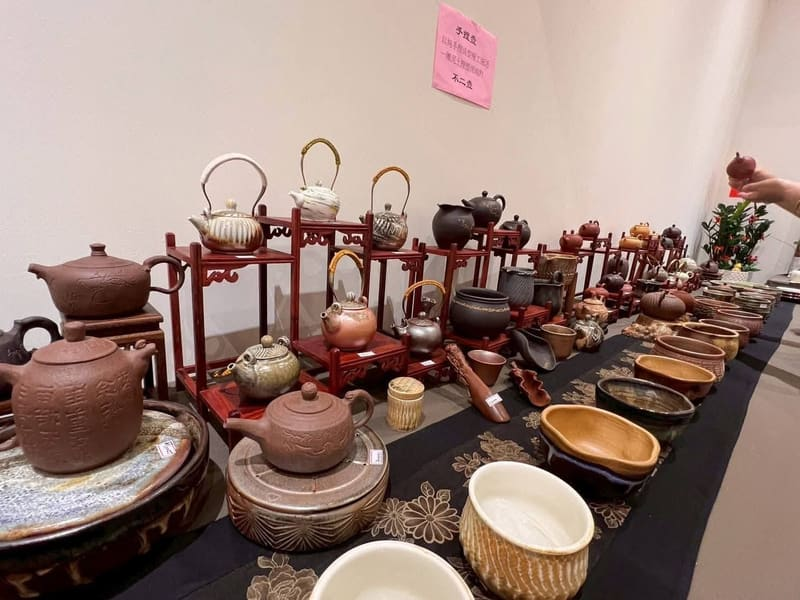
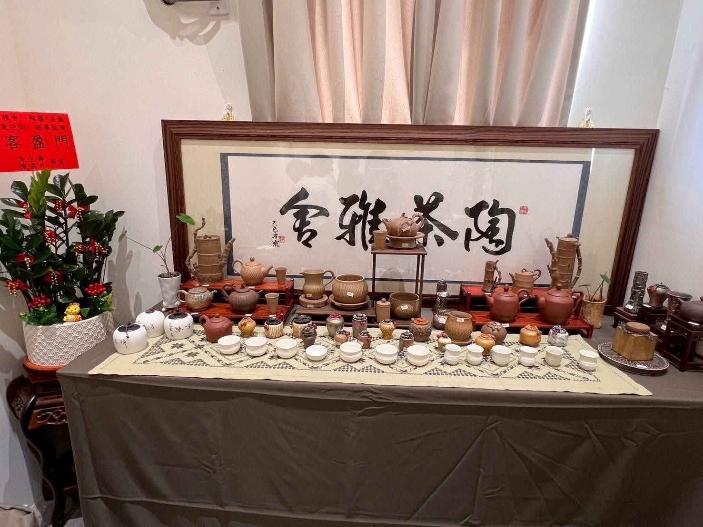
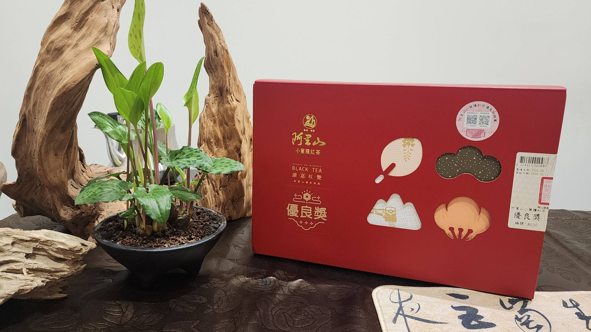
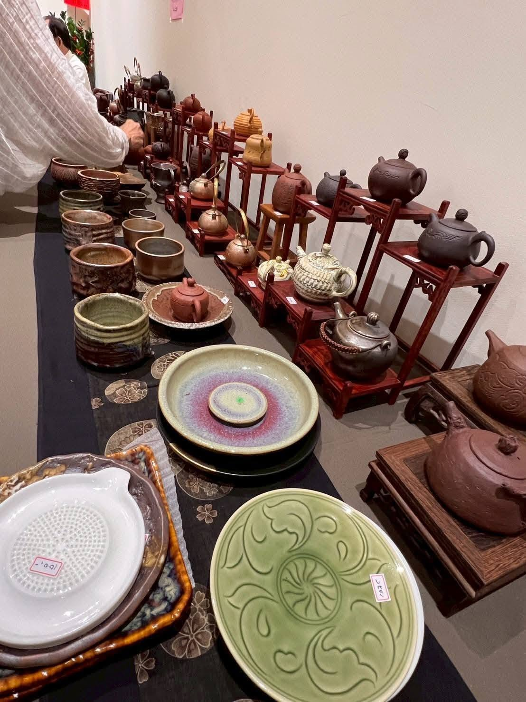

🔥 熱烈報名中

Tao · Tea · Art House｜Since 2025
2025 年，由田清標老師與江秝笙老師夫妻倆共同創辦的「陶茶雅舍」，承載著 30 餘年手捏茶壺的工藝底蘊，將陶藝創作與品茶文化融為一體。
這裡不只是一間教室，更是一處讓生活慢下來的所在。我們相信，茶不只是入口的風味，更可以是手作、有溫度的藝術；而泥土經過雙手與火的淬鍊，會成為陪伴日常的器物。
從手捏壺創作、茶藝教學到高山茶選品，陶茶雅舍邀請你走進泥與火的故事，找回屬於自己的生活溫度。

30 餘年手捏茶壺職人・桃城手捏壺學會會員

壺藝達人｜創辦人
從事手捏茶壺創作已 30 餘年，曾於梅嶺美術館、台南文化中心、嘉義文化中心等全台多處聯展，作品深受收藏家青睞。2025 年與妻子共同創辦陶茶雅舍，致力將手捏壺工藝傳承下一代。
壺藝達人｜高級茶藝師
30 餘年陶藝師資歷，並持有高級茶藝師證照，將陶藝與茶藝兩門工藝融會貫通。夫妻倆攜手創作、共同授課，讓每一件作品、每一堂課，都充滿手作的溫度與茶的靜謐。
💡 創辦人夫妻檔 攜手創作 30 餘年，於全台文化中心、美術館聯展超過 20 場次
從手作到品茗，一站式茶陶生活體驗
手捏壺、手作陶器課程，從入門到進階，由 30 年資歷職人親自指導。
識茶學、茶席禮儀、水溫比例掌握，帶你喝懂一杯好茶的實學。
嚴選高山茶葉，從產地到茶席，把山頭氣與茶湯香帶進你的日常。
手捏壺、茶器、生活陶藝選品，每件都是獨一無二的手作藝術。
真實上課身影，看見學員的專注與收穫



每一件手捏壺，都是泥與火的獨白




✦ 每件作品皆為獨一無二手作，歡迎來電或 FB 訊息詢問訂製與選購
15 年來，在全台文化中心與美術館的足跡
作品被看見，也讓溫度被傳遞
2025 · 06·14
應邀參與天主教安道家園募款義賣活動，提供 6 件創作壺具，由主教浦英雄、嘉義縣政府社會局長張翠瑤、大林鎮長許有疆等公開拍賣。
拍賣所得 NT$ 350,000 全數捐贈安道家園走進陶茶雅舍，與我們共飲一杯好茶
ADDRESS
台南市新營區三民路92-2號 2樓
（辻間創生聚落 B3棟 2樓）
PHONE
OPEN HOURS
採預約制
歡迎來電或 FB 訊息聯繫安排參觀